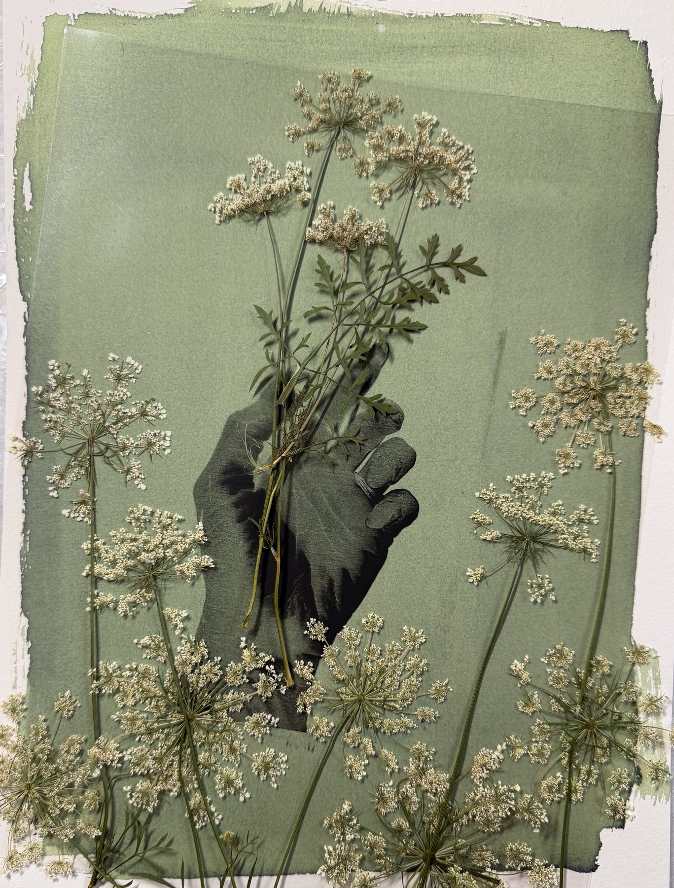
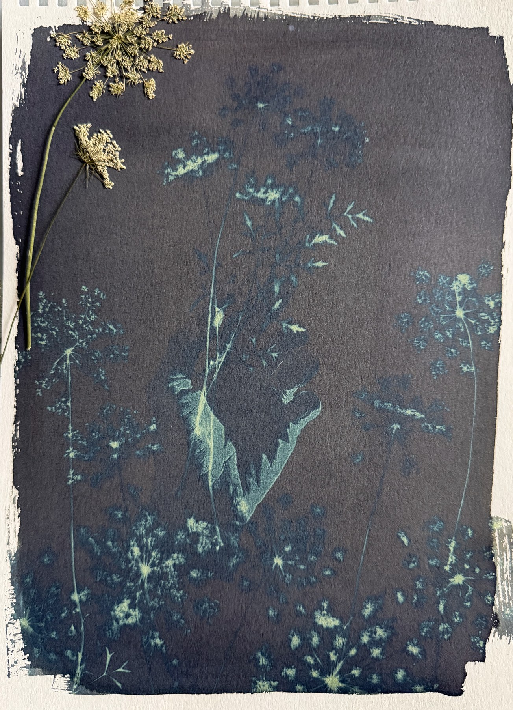
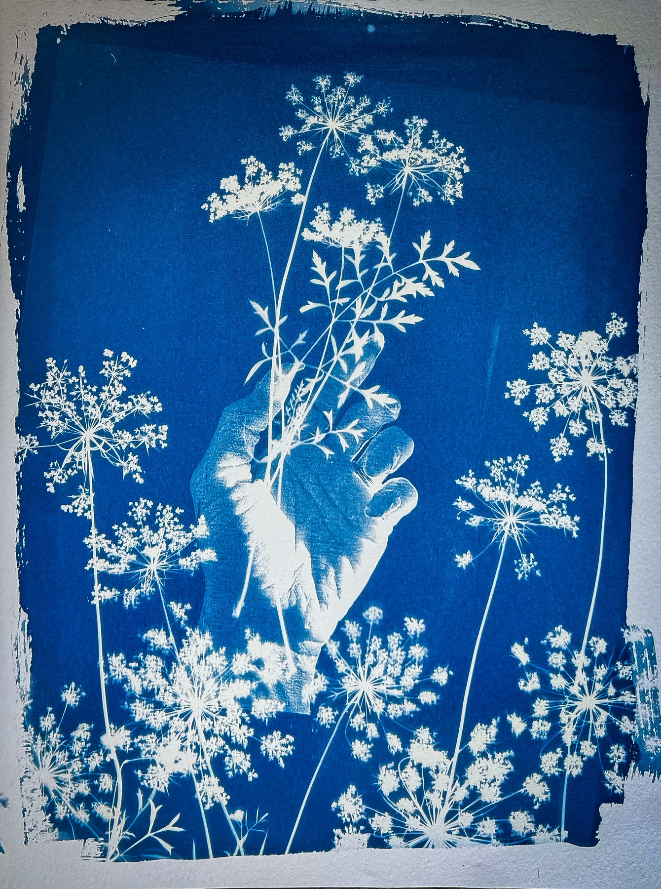
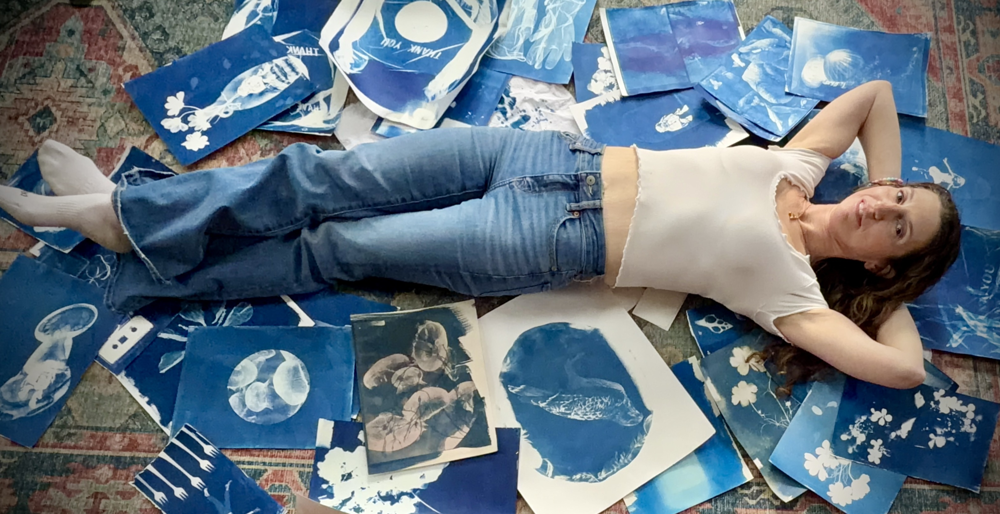

Cyanotype is actually a form of photography. It might look a little different from what we typically think of as photography, but it’s a photographic process developed in the 1800s that uses iron-based chemistry and sunlight, or, in my case, my beloved UV lamp, to create images.
One of the things I love most about cyanotype is that it sits somewhere between photography and printmaking. As a cyanotype artist, I can carefully plan an image, but light, weather, chemistry, transparency, and the physical materials themselves all have a say in the final result.
The process begins by mixing two solutions that, when combined and coated onto paper or fabric, make the surface light-sensitive. Cyanotype is a contact printing process, which means objects, plants, photographic negatives, or other materials are placed directly on the treated surface and exposed to UV light. When the print is washed in water, the areas exposed to light turn a deep blue, while areas protected from the light remain lighter shades of blue or white.
Every cyanotype is exposed, washed, and made by hand, which means no two prints are ever exactly alike.

I am a photographer, cyanotype artist, and educator based in Connecticut.
My work begins with paying attention. Through cyanotype, I use sunlight, plants, photographs, found papers, fabric, and collected materials to create layered images that sit between documentation and transformation.
I'm interested in the back-and-forth between photographic negatives and physical objects, layering them so each reveals something new about the other. I keep returning to cyanotype because it lets me explore a tension: the careful placement of an object against the unpredictable marks left by light, chemistry, weather, and time.
These pieces are fragments of my life and the natural world, gathered, preserved, and transformed. My work is rooted in experimentation, curiosity, and the simple act of noticing something interesting and wondering what would happen if I make something with it.